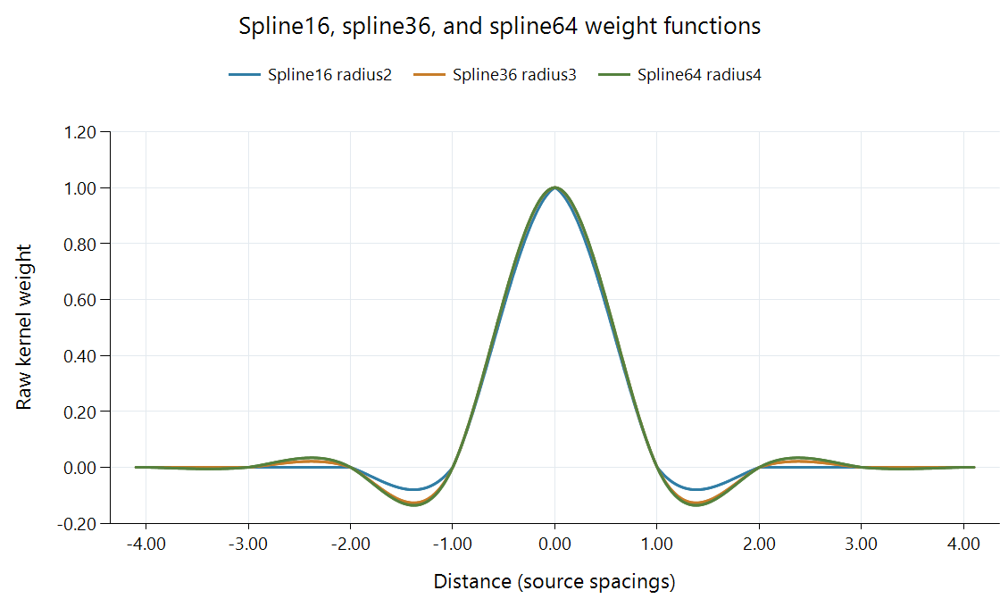

Spline Video Scaling
| Illustrated function | Support radius in source spacings | Typical fractional-position samples per axis | Direct two-dimensional neighborhood |
|---|---|---|---|
| Spline16 | 2 | 4 | 4 × 4 |
| Spline36 | 3 | 6 | 6 × 6 |
| Spline64 | 4 | 8 | 8 × 8 |
These named reconstruction functions use piecewise polynomials. Their suffixes identify the conventional two-dimensional neighborhood sizes; they are not video bit depths. The figure uses their definitions from libplacebo v7.360.1.

All three have central weight one and zeros at the other integer positions inside their support. Their curves differ between those positions. Increasing support adds further positive and negative contributions, so a wider spline changes the reconstruction rather than simply adding more copies of the same average.
The generic label spline can also refer to other polynomial reconstruction choices. For example, a cubic B-spline shape is one member of the bicubic family, and FFmpeg documents its own natural bicubic spline scaler. A specific function name and implementation identify the coefficients needed for reproduction.
Half-sample coefficients
Spline16 makes a compact worked example. At output coordinate x = 0.5, indices −1, 0, 1, and 2 receive weights −0.075, 0.575, 0.575, −0.075. For source values 0.1, 0.3, 0.8, 0.9, the result is:
−0.075 × 0.1 + 0.575 × 0.3 + 0.575 × 0.8 − 0.075 × 0.9 = 0.5575.
The weights sum to one. The neighboring context shifts the result slightly from the central-pair linear average of 0.55. Around an abrupt step, the negative terms can instead create ringing.
At the same phase, the wider functions have more terms:
| Function | Normalized coefficients, from the lowest contributing index upward |
|---|---|
| Spline16 | −0.075000, 0.575000, 0.575000, −0.075000 |
| Spline36 | 0.019737, −0.118421, 0.598684, 0.598684, −0.118421, 0.019737 |
| Spline64 | −0.005282, 0.031690, −0.126761, 0.600352, 0.600352, −0.126761, 0.031690, −0.005282 |
Rounded entries are shown for reading; the calculations use the full coefficients. For a flat source, each set preserves its value. For textured material, the sequence of signs and distances determines which variations are reinforced or suppressed.